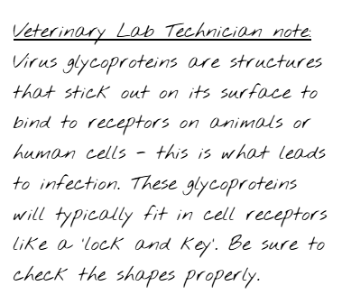

This is a fictional, game‑style scenario for entertainment and education. It is not medical advice. For
real outbreaks or health concerns, consult qualified public‑health professionals.
The Village Outbreak
An Epidemiology Puzzle
BACKGROUND
You are an epidemiologist on summer leave who returned to your small hometown in May. On July 21st, 2026
a local resident named Eliza Brown died suddenly from an unknown infection. The village is isolated and
anxious, and Mr. Brown, Eliza's sister, is distraught. The local clinic's lab is small with out-dated
technology, but managed to conduct an autopsy and found some kind of virus in tissue samples. Because of
your hometown being small, there isn't much available information about recent viruses or disease
pathology. Since you have knowledge on health and disease outbreaks as a public health processional, you
volunteer to investigate, trace the source, and stop the infection before it spreads.
After receiving approval to investigate with the town hall, the clinic's lab
hands you the autopsy
report. You then ask around the town to see if they have interacted with Eliza prior to her
death to
gain additional information.
COLLECTED INFORMATION
MR.BROWNMr.Brown noticed her sister coughing for around 2 weeks and some difficulty sleeping. He
remembered
trying to help her with a high fever that lasted 2 days, but then Eliza seemed completely fine a few
days before her death.
MRS.SMITHMrs.Smith noted that Eliza didn't have her stew for several days
during the week before her death.
When she asked Eliza why she wasn't having the stew, she replied “I've been having problems with my
stomach recently, I can't keep anything down and I haven't been
that hungry!”
BROWN JR.
Brown Jr. mentioned that Eliza didn't play soccer with him as “she was too
tired”
MARKET NOTE
Eliza often visited the market stalls to buy produce and meats for cooking. She was close friends
with the sellers and would bring some of her cooking for them as a token of appreciation.
YOUR MISSION
Use the three puzzles to:
Identify the original source
Determine how the virus crossed species and killed the victim
Stop the outbreak by choosing who needs to be vaccinated to protect the village
PUZZLE 1 - PART 1
Trace the Source
PUZZLE 1 BRIEF
Based on the information you gathered, you went to investigate popular sites in the town among the
townsfolk: the market stalls from the farmers. You wanted to investigate whether the animals were
affected by this mysterious virus, so you sent some samples from various sites in the town to the
nearest veterinary lab to get it tested. Since the local lab can only do basic screening for humans, you
have to wait for the veterinary lab to send the results back to you.
While you wait for the results, you went to the market and asked if there have been any problems
recently with their products. You wrote some additional information in your
notebook.
Part 1 Instructions
The town map has been provided to you. Based on all the information you've
gathered so far, where
are the possible locations that Eliza Brown could've been infected from? List the locations in order.
PUZZLE 1 - PART 2
Host Range Matching
Labratory Report
The results from the veterinary lab came back! Based on the animal samples that were sent, they noticed
that there were some virus structures within the tissues. They sent you some of the animal cell images
with receptors and virus structure glycoproteins that were found in the samples. The veterinary lab
technicians left a note with the images for you to read:

Part 2 Instructions
Match the shape of the glycoprotein to the receptor. Including the information
you gathered from Part 1,
where did Eliza Brown originally get infected? Answer the question using the animal in which the
receptor was from. (Hint: use the paired viral glycoprotein and cell receptor to confirm the
location of
infection on the map!)
PUZZLE 2 - PART 1
Mutation & Viral Adaptation
Background Story
You have discovered that Eliza Brown has likely contracted a viral infection while handling chickens in
the East farm! Based on the receptor and viral glycoprotein information, you suggest that the virus from
chickens is the avian flu: an influenza virus.
While looking at the viral glycoproteins and the cell receptors, you noticed something interesting with
the glycoproteins from the chicken and Eliza's lung cells… One glycoprotein fits
with two receptors, but
the other only fits with one receptor…
Based on this finding, you head to the local clinic laboratory and run some RNA sequencing tests on the
viral structures from the chicken and Eliza. Unfortunately, the old-fashioned sequencer hasn't been
replaced for some time, so the sequences are messed up. Luckily, there is a cipher wheel attached to the
machine to allow the sequence to be 'translated' (how convenient…).
GENERATE SEQUENCING RESULTS
Sequence 1 from chicken tissue:
>TMYAFBNUKCEWYWXOHMQTSVBCDWZELM
Sequence 2 from Eliza's tissue:
>BDKSWEILBRTDKNXVLQEBPJJJFDARUS
Part 1a Instructions
Use the cipher wheel to decode the messed-up sequence to generate the correct RNA sequence.
Part 1b Instructions
After finding the correct RNA sequence, you need to convert the sequences to amino acids. These amino
acids will form the viral protein that was originally found in the chicken and Eliza's tissue samples
that were sent to the laboratory. Every three letters code for one amino acid. Using the conversion
table provided, find the amino acid sequence based on the RNA sequence you deciphered.
Once the amino acid sequence is found, identify any differences found between the sequences. Write the
amino acid from sequence 1, then from sequence 2.
PUZZLE 2 - PART 2
Tracing Viral Evolution
Cross-Species Spillover
You found that the viral protein from Eliza's tissue sample only differs by one amino acid from the
chicken viral protein. What a small difference that led to the glycoprotein being able to bind to both
human and chicken lung receptors! With your knowledge working with public health diseases, you conclude
that Eliza Brown was infected with a mutated avian flu - a human influenza virus.
As an epidemiologist, you know that animal viruses can mutate and 'spillover' to humans, leading to an
outbreak. These outbreaks can occur in situations similar to what you are seeing now - somehow, the
chicken virus mutated a single change in its amino acid (which you identified), allowing the virus to
infect humans. Unfortunately, Eliza was the first victim to this spillover event.
Instructions
Here are some steps that contribute to an animal virus developing the ability to infect humans. Arrange
the cards in the correct order. Use this number order as the password.
PUZZLE 3
Containing the Outbreak
In the days following Eliza Brown's death, several villagers begin showing flu-like symptoms. The clinic
now suspects the virus may already be spreading through the village.
Unfortunately, the village pharmacy currently has only eight vaccine doses
available, and the next
shipment will not arrive for another week. If the virus continues to spread during this time, more
residents may become infected.
As the epidemiologist investigating the outbreak, you must decide how to
use these limited vaccines to
slow the spread of the virus and protect the community.
Your Mission
In the days following Eliza Brown's death, several villagers begin showing flu-like symptoms. The clinic
now suspects the virus may already be spreading through the village.
Unfortunately, the village pharmacy currently has only eight vaccine doses available, and the next
shipment will not arrive for another week. If the virus continues to spread during this time, more
residents may become infected.
As the epidemiologist investigating the outbreak, you must decide how to use these limited vaccines to
slow the spread of the virus and protect the community.
Instructions
Examine the Social Network Map
Study the map to understand how villagers interact with one another and who has the most
daily contacts.
Review the Character Cards
Each villager has a character card with two sides:
Front side: shows the character's social relationships and daily interactions with
others in the village.
Back side: shows the character's health status, including whether they are healthy
and whether they are able to receive the vaccine.
Analyze the Information
Use both the social network connections and the health status of each villager to determine who
should be prioritized for vaccination.
Select 8 Villagers to Vaccinate
Choose eight villagers who you believe will best reduce the spread of the virus.
Submit your decision by selecting the eight people you decided to vaccinate.
Once your choices are submitted, the final outcome of the outbreak will be revealed.